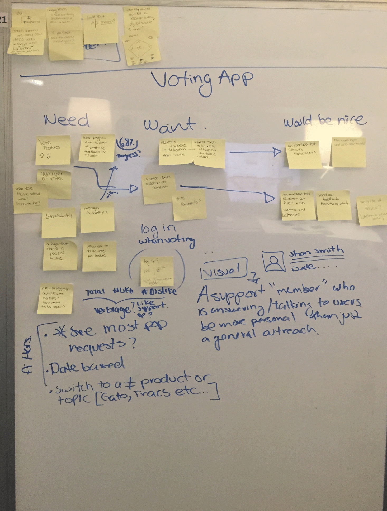
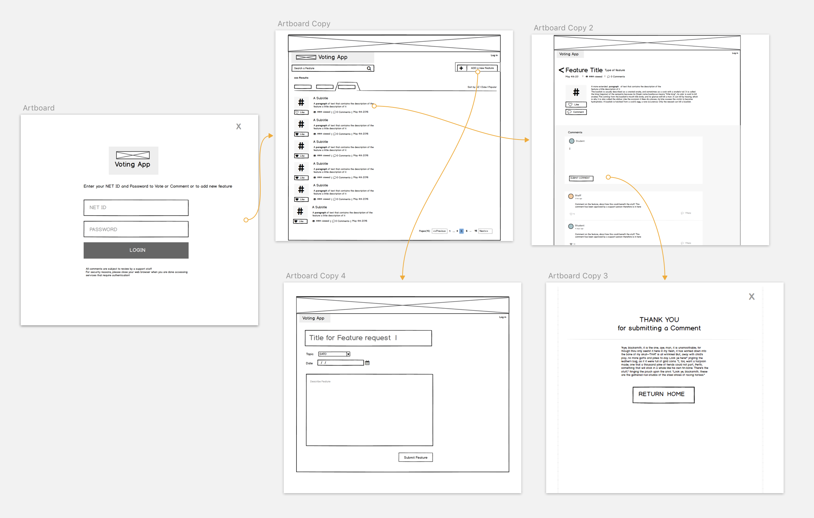
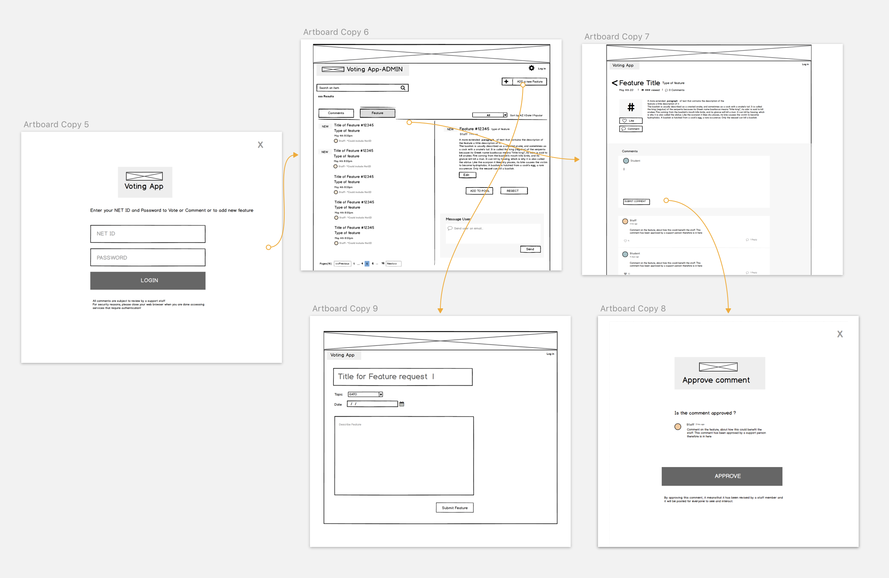
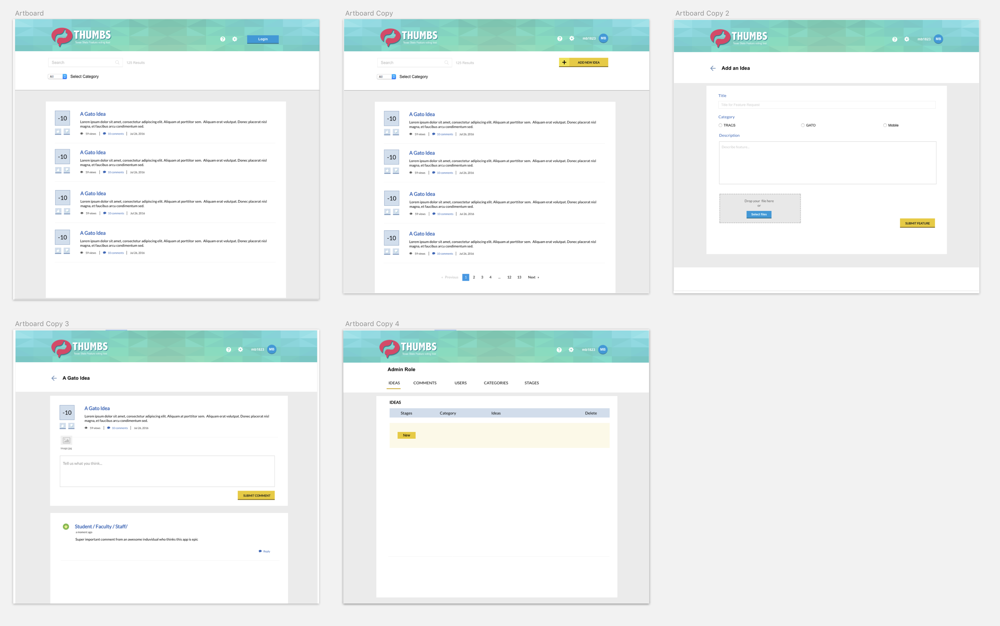

Voting APP
Voting tool to allow users to drive feature implementation-Prototype stage
Role
Lead UX/UI Designer. In charge of designing user experience and UI elements.
Overview
The Voting app is a tool that would allow users to request features for the different digital tools around campus, and vote so the development team can drive their work based on what users have requested.
Currently there are 5 top front facing digital tools that are managed by the same team at Texas State the Univeristy website CMS , the Learning Management system and as it's app, the main University ios and android app and faculty profiles website.
My process
Starting with the initial requirements of desire functionality I divided the functionality in required and nice to have, since this tool was created from the teams perspective it was too broad at first; I helped the team identify the functionality that would be most used by users.
I created a flow of what the system would do and what type of content would it show based on the work done at the requirements stage. I then created a click prototype to showcase and test this functionality.
User testing was conducted with the prototype and we changed some of the functionality. This system allows users to comment vote for a feature and add new features. Users can also search features to see if it already exists.
There is also an admin interface where a moderator can delete any offensive comment and has the same functionality as users but is also able to delete replicate features or add permissions to users to the system
Collaboration with devs. For this project the developer on the project created a web version of the tool with my prototypes and added some style that I later changed.
Final design is still on the works and system has not being yet implemented.